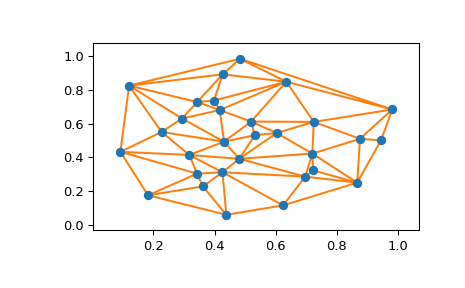

scipy.spatial.delaunay_plot_2d¶
-
scipy.spatial.delaunay_plot_2d(tri, ax=None)¶ Plot the given Delaunay triangulation in 2-D
- Parameters
- triscipy.spatial.Delaunay instance
Triangulation to plot
- axmatplotlib.axes.Axes instance, optional
Axes to plot on
- Returns
- figmatplotlib.figure.Figure instance
Figure for the plot
See also
Notes
Requires Matplotlib.
Examples
>>> import matplotlib.pyplot as plt >>> from scipy.spatial import Delaunay, delaunay_plot_2d
The Delaunay triangulation of a set of random points:
>>> points = np.random.rand(30, 2) >>> tri = Delaunay(points)
Plot it:
>>> _ = delaunay_plot_2d(tri) >>> plt.show()
